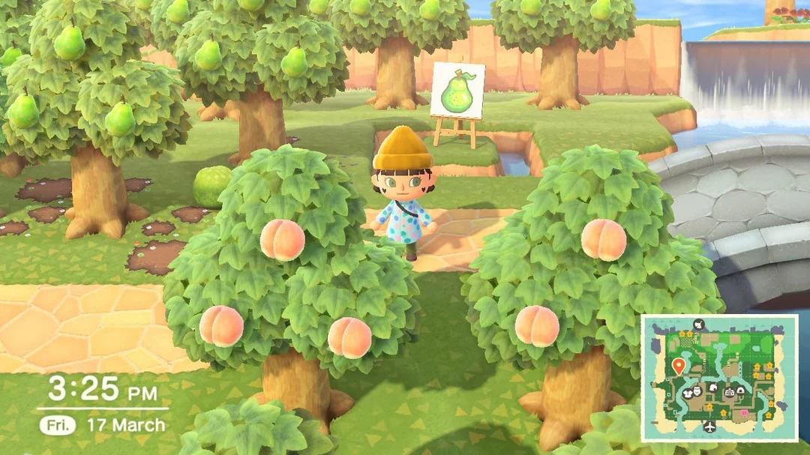
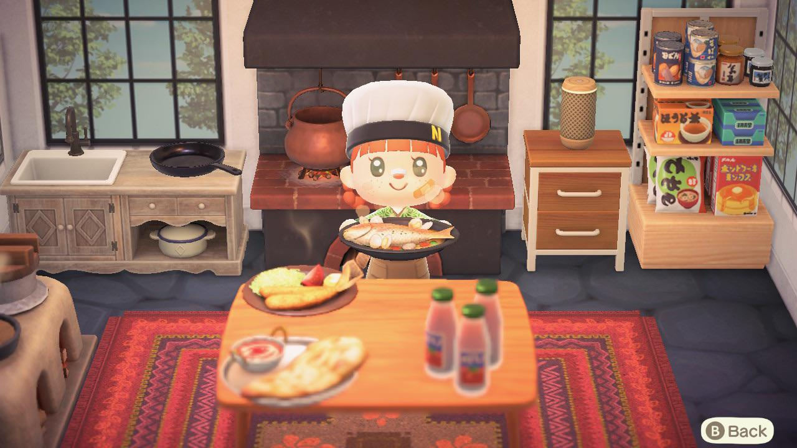
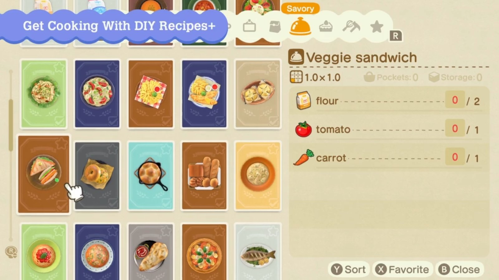

Animal Crossing offers a diverse range of food, creating an even more enjoyable world for players. 
Animal Crossing Fruits (Original Food)
Over the years and through new game releases, the Animal Crossing menu has evolved from simple treats to more detailed and delicious meals. In the early games, food options were mostly limited to fruits like apples, pears, oranges, coconuts, and mushrooms, while candy was later added during special events like Halloween. In Animal Crossing: New Horizons the food choices expanded significantly, providing players with a variety of appetizing dishes. This new feature encourages players to collect ingredients and cook their own delicious meals, with choices including pizza, salads, tarts, noodles, pancakes, spaghetti, and more.
The menu also showcases foods from different cultures and countries, such as biryani, Champiñones al Ajillo, hearty ramen, nigirizushi, pad krapow, and many others. Players can also enjoy savoury beverages like various flavours of bubble tea, juices, sodas, lattes, coffee, and tea. For dessert lovers, there are treats like ice cream, donuts, frozen treats, cotton candy, cakes, pies, and cupcakes. Overall, the menu is diverse and fun, allowing players to explore new dishes and customize their meals every day, making for a more interactive and enjoyable experience.
Player Cooking Food in New Horizons
List of Recipes in New Horizons